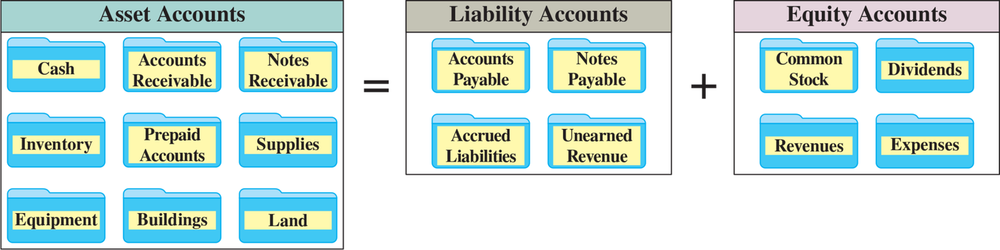
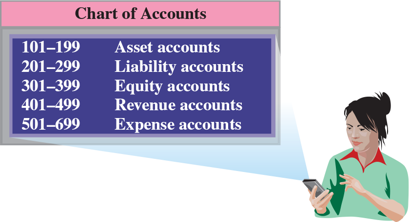

Chapter 2 — Basis of Financial Statements
ACCT 203 · Principles of Financial Accounting · Chapter 2: Accounting for Business Transactions · Section 1 of 4:
Basis of Financial Statements
Objective C1: Describe an account and its use in recording transactions.
This section is “where the numbers come from, and where they are kept”
In Chapter 1 you analyzed FastForward's transactions with the accounting equation directly. Now the book shows you the real system that the numbers move through inside a company: every transaction starts with a document that proves it (a source document), it is recorded in an account, all the accounts are collected in the ledger, and each account has a number in the chart of accounts.
Focus from now: the most common question from this section is classification — they give you an account name and ask: asset? liability? equity? And you have keys that make it easy: any account with payable or unearned = a liability; any account with prepaid or receivable = an asset; and Common Stock, Dividends, Revenues, and Expenses = equity (unless the question also offers Revenue and Expense as choices — see the trap in concept 4). The second thing: the numbers in the chart of accounts — the first number tells you the type of the account.
Transactions and events are the starting point of the financial statements. You prove them with a document, analyze them with the equation, record them in the journal, post them to the ledger, and then you get the trial balance and the statements.
The book says: business transactions and events are the starting points of financial statements, and the road from them to the statements is five steps, in this order:
| # | The step in English (memorize it word for word) | What it means |
|---|---|---|
| 1 | Identify each transaction and event from source documents. | Recognize the transaction from its document (a receipt, a bill, a check…) |
| 2 | Analyze each transaction and event using the accounting equation. | Analyze it with the equation: Assets = Liabilities + Equity — the same work as Chapter 1 |
| 3 | Record relevant transactions and events in a journal. | Record the relevant transactions in the journal — you meet it in section 3 |
| 4 | Post journal information to ledger accounts. | Post (posting = moving) the information from the journal to the accounts in the ledger |
| 5 | Prepare and analyze the trial balance and financial statements. | Prepare and analyze the trial balance and the financial statements — section 4 |
![Four panels joined by green arrows: a customer paying cash at Z-Mart Stores labeled Transaction occurs with source documents; a hand holding a note that says Owner invest cash in company, Assets = Liabilities + Equity, 2,000 = Ø + 2,000, labeled Transactions analyzed with accounting equation; a clerk at a screen showing a general journal and general ledger, labeled Transactions recorded and posted; a woman at a screen showing financial statements, labeled Transactions reported in financial statements](../img/acct203/ch02-wil28773_bass_of_fin0201.png)
This picture is at the start of the part in the book (it has no Exhibit number). Four panels with green arrows between them: 1 a customer's hand pays cash for a necklace at Z-Mart Stores, with a receipt — Transaction occurs with source documents. 2 a hand holds a note that says Owner invest cash in company, and under it Assets = Liabilities + Equity and 2,000 = Ø + 2,000 — Transactions analyzed with accounting equation (the owner put in 2,000 cash: assets went up 2,000 and equity went up 2,000, and liabilities are zero). 3 a woman at a screen with a General Journal at the top and a General Ledger below it, with numbered arrows between them — Transactions recorded and posted. 4 a woman at a screen showing the financial statements — Transactions reported in financial statements. How to read it: the picture has four panels but the list has five steps — because panel 3 combines recording and posting (recorded and posted) in one panel. What they ask: the order of the steps.
Source documents = the documents (paper or electronic) that identify and describe transactions and events as they enter the accounting system.
- Their form: they can be paper (hard copy) or electronic (electronic form) — both count.
- The book's examples (six): sales receipts · checks · purchase orders · bills from suppliers · payroll records · bank statements.
- The book's example: a cash register records each sale on a tape or an electronic file — and this record is the source document used to record sales in the system.
- Why do they matter? Because they are objective and reliable evidence about transactions and events and their amounts.
Side note from the book (Point): accounting records are also called accounting books or just the books.
Business transactions and events are the starting points of financial statements. The process to go from transactions and events to financial statements includes the following. Identify each transaction and event from source documents. Analyze each transaction and event using the accounting equation. Record relevant transactions and events in a journal. Post journal information to ledger accounts. Prepare and analyze the trial balance and financial statements.
Source documents identify and describe transactions and events entering the accounting system. They can be in hard copy or electronic form. Examples are sales receipts, checks, purchase orders, bills from suppliers, payroll records, and bank statements. Source documents are objective and reliable evidence about transactions and events and their amounts.
Accounting records are also called accounting books or the books.
- The order: document → analysis → journal → ledger → trial balance and statements. The journal comes before the ledger, always. Any choice that starts with posting or with the trial balance is wrong.
- The text has five steps, but the picture has four panels (recording and posting share one panel). Do not mix them up.
- A trial balance, a balance sheet, an income statement, and a “revenue account” are not source documents — they are the outputs of the system, not its inputs. A document = a receipt, a supplier's bill, a bank statement, a telephone bill… (exercise QS 2-1).
- A document can be electronic — a choice that says “it must be paper” is wrong.
Account = a record of the increases and decreases in one item. Ledger = all the accounts with their balances. And assets have eight basic accounts in the text.
An account = a record of the increases and decreases in a specific asset, liability, equity, revenue, or expense. So every item has its own account: an account for cash, an account for supplies, an account for accounts payable…
The general ledger, or simply the ledger = a record of all accounts and their balances. It is often electronic. And although most companies have similar accounts, a company often uses one or more unique accounts to match its type of operations. The book's sentence: While most companies’ ledgers have similar accounts, a company often uses one or more unique accounts to match its type of operations.

This is Exhibit 2.1. Three boxes arranged like the accounting equation: Asset Accounts = Liability Accounts + Equity Accounts, and each account is drawn as a blue folder. Assets — nine folders: Cash · Accounts Receivable · Notes Receivable · Inventory · Prepaid Accounts · Supplies · Equipment · Buildings · Land. Liabilities — four: Accounts Payable · Notes Payable · Accrued Liabilities · Unearned Revenue. Equity — four: Common Stock · Dividends · Revenues · Expenses. Total: 17 folders. Careful: Inventory (goods kept for sale) is in the figure, but the text does not explain it in this part. What they ask: “which box does this account go under?”
Assets = resources owned or controlled by the company, with expected future benefits. Most accounting systems include (at a minimum) a separate account for each of these eight:
| Account | What it records | The details the exam loves |
|---|---|---|
| Cash النقدية |
The company's cash balance — all increases and decreases in cash are recorded here. | It includes money and any funds that a bank accepts for deposit: coins, checks, money orders, and checking account balances. |
| Accounts Receivable الذمم المدينة |
Held by the seller: promises of payment from customers to sellers. | They increase with credit sales (on credit = on account), and decrease when the customer pays. With many customers, each customer has a separate record titled Accounts Receivable—‘Customer Name’. |
| Notes Receivable أوراق القبض |
A note receivable or promissory note = a written promise of another entity to pay a specific sum of money on a specified future date to the holder of the note. The holder has an asset recorded in a Notes Receivable account. | The difference from accounts receivable: it comes from a formal contract called a promissory note, and it usually requires interest, while accounts receivable do not. |
| Prepaid Accounts مصروفات مدفوعة مقدماً |
Also called prepaid expenses: assets from prepayments of future expenses (expenses expected to be incurred in future accounting periods). | When the expense actually happens, the amount moves to an expense account. Examples: prepaid insurance · prepaid rent · prepaid services. Prepaid accounts expire with the passage of time (such as with rent) or through use (such as with prepaid gift cards). Details in Chapter 3. |
| Supplies المستلزمات |
Supplies are assets until they are used. When they are used up, their cost is reported as an expense. | Unused supplies are recorded in the asset account Supplies. They are often grouped by purpose: office supplies and store supplies. |
| Equipment المعدات |
Equipment is an asset. Its cost is allocated over time to expense, called depreciation. | Grouped by purpose: office equipment and store equipment. |
| Buildings المباني |
Stores, offices, warehouses, and factories = assets. Their cost is also spread over time as depreciation. | When the company owns several buildings, sometimes each building has its own account. |
| Land الأراضي |
The cost of land is recorded in the Land account. | The building located on the land is recorded separately in a building account — the land is one account, and the building is another. |
After the asset accounts, the book puts a box about Jasmine Crowe, the founder and CEO of Goodr, who works to reduce food waste and combat hunger. Then it gives numbers from The Center for Women’s Business Research about women-owned businesses — three points:
- They total more than 11 million businesses and employ nearly 20 million workers.
- They generate $2.5 trillion in annual sales and tend to embrace technology.
- They are philanthropic: 70% of owners volunteer at least once per month.
This is a general-knowledge box — it has no new accounting idea, so do not waste time memorizing its numbers.
An account is a record of increases and decreases in a specific asset, liability, equity, revenue, or expense. The general ledger, or simply ledger, is a record of all accounts and their balances.
Assets are resources owned or controlled by a company. Resources have expected future benefits.
Accounts receivable are held by a seller and are promises of payment from customers to sellers. Accounts receivable are increased by credit sales or sales on credit (or on account). They are decreased by customer payments.
A note receivable, or promissory note, is a written promise of another entity to pay a specific sum of money on a specified future date to the holder of the note. Notes receivable usually require interest, whereas accounts receivable do not.
Prepaid accounts (or prepaid expenses) are assets from prepayments of future expenses (expenses expected to be incurred in future accounting periods). When the expenses are later incurred, the amounts in prepaid accounts are transferred to expense accounts.
Supplies are assets until they are used. When they are used up, their costs are reported as expenses.
- Prepaid = an asset, not an expense — even though its other name is prepaid expenses. It becomes an expense later, when it is used or its time passes.
- Supplies are an asset until they are used; the used part = expense, and the part that is left = asset.
- Notes receivable usually have interest and come from a formal contract; accounts receivable have no interest. A choice that reverses this = wrong.
- Accounts receivable are held by the seller (the customer owes him money). They increase with credit sales and decrease when the customer pays.
- Land and the building on it = two separate accounts. Equipment and buildings get depreciation; the text does not mention depreciation for land.
- Account = one account. Ledger = all the accounts with their balances.
Liabilities = what the company must give others later (assets, products, or services) — in other words, the creditors' claims on the assets. There are four common accounts.
Liabilities = obligations to transfer assets or provide products or services to others. They are claims by creditors against assets.
| Term | Definition | Remember it like this |
|---|---|---|
| Creditors الدائنين |
Individuals and organizations that have rights to receive payments from a company. | the one who wants money from you |
| Debtors المدينين |
Those who owe money. | the one who owes money |
| Account | What it is | The details |
|---|---|---|
| Accounts Payable الذمم الدائنة |
Promises to pay later. | Payables can come from purchases on credit or on account of merchandise for resale, supplies, equipment, and services. With many suppliers, each supplier has a record titled Accounts Payable—‘Supplier Name’. |
| Notes Payable أوراق الدفع |
A written promissory note to pay a future amount. | The difference from accounts payable: it comes from a formal contract (a promissory note) and usually requires interest. |
| Unearned Revenue إيرادات غير مكتسبة |
A liability recorded when customers pay in advance for products or services. | The book's examples (three): magazine subscriptions collected in advance by a publisher · rent collected in advance by a landlord · season ticket sales by sports teams. The seller records them in accounts such as Unearned Subscriptions and Unearned Rent. When the product or service is delivered later, it moves to revenue. |
| Accrued Liabilities التزامات مستحقة |
Amounts owed that are not yet paid. | Examples: wages payable · taxes payable · interest payable. Each is often recorded in a separate account with the same title. |
Golden rule from the book (Point): two words almost always identify a liability account:
- “payable” = liabilities that must be paid.
- “unearned” = liabilities that must be fulfilled — you must deliver the product or service.
The book's example (Decision Insight): many professional sports teams have over $100 million in tickets sold in advance in Unearned Revenue. When a team plays its home games, it settles this liability to its ticket holders and then transfers the amount earned to Ticket Revenue. The book names teams from the Women's National Basketball Association (WNBA): Seattle Storm, Minnesota Lynx, and L.A. Sparks.
The book's summary at the end of the chapter says, for each of these four accounts, who records it (held by). Learn them as two pairs: the seller and the buyer in the accounts, and the lender and the borrower in the notes:
| Account | Type | Held by | What it is, in the summary's words |
|---|---|---|---|
| Accounts receivable | asset | a seller | promises of payment from customers to sellers; increased by credit sales |
| Accounts payable | liability | a buyer | a buyer’s promise to pay a seller later for goods or services received |
| Notes receivable | asset | a lender | a borrower’s written promise to pay the lender a specific sum of money on a specified future date |
| Notes payable | liability | a borrower | a written promissory note to pay a future amount at a future date |
In other words: one promise has two faces — at the seller it is a receivable (an asset), and at the buyer it is a payable (a liability). The same with a note: at the lender it is a note receivable, and at the borrower it is a note payable.
Liabilities are obligations to transfer assets or provide products or services to others. They are claims by creditors against assets. Creditors are individuals and organizations that have rights to receive payments from a company. Debtors are those who owe money.
Accounts payable are promises to pay later. A note payable is a written promissory note to pay a future amount. Notes payable are different from accounts payable because they come from a formal contract called a promissory note and usually require interest.
Unearned revenue is a liability that is recorded when customers pay in advance for products or services. When products and services are later delivered, unearned revenue is transferred to revenue.
Accrued liabilities are amounts owed that are not yet paid. Examples are wages payable, taxes payable, and interest payable.
Two words that almost always identify liability accounts: “payable,” meaning liabilities that must be paid, and “unearned,” meaning liabilities that must be fulfilled.
- Unearned Revenue = a liability, not revenue and not an asset. Yes, the cash came in, but the company still “owes” the service. It becomes revenue after it delivers.
- Creditors = you owe them money. Debtors = they owe you money. The exam swaps them.
- Notes payable vs. accounts payable: the difference is a formal contract + usually interest — the same difference as notes vs. accounts receivable, but from the side that owes the money: the buyer in accounts payable, and the borrower in notes payable (a discussion question at the end of the chapter).
- Wages / Taxes / Interest Payable = accrued liabilities — all of them are liabilities, not expenses.
Equity = the owner's remaining claim on the assets after you subtract the liabilities. It is affected by four types of accounts: Common Stock (+), Dividends (−), Revenues (+), and Expenses (−).
The owner's claim on a company's assets is called equity, stockholders’ equity, or shareholders’ equity — three names for one thing. It is the owner's residual interest in the company's assets after subtracting liabilities. And equity is impacted by four types of accounts (Exhibit 2.2).
This is Exhibit 2.2. The word Equity on the left, then = and four blue folders with signs between them: Common Stock − Dividends + Revenues − Expenses. How to read it: the sign before each folder tells you whether it raises or lowers equity. What they ask: they give you the numbers of the four and ask for equity, or they ask which account lowers it.
| Type | Account | Effect | What the book says |
|---|---|---|---|
| Owner Investments استثمارات المالك |
Common Stock الأسهم العادية |
+ | When an owner invests in the company, assets and equity both increase, and the increase in equity is recorded in Common Stock. And owner investments are not revenues. |
| Owner Distributions توزيعات على المالك |
Dividends التوزيعات |
− | When a corporation distributes assets to its owners, assets and equity both decrease, and the decrease is recorded in Dividends. Dividends are not expenses — they are simply the opposite of owner investments. |
| Revenue Accounts حسابات الإيرادات |
Revenues الإيرادات |
+ | Sales of products and services to customers. Examples (five): Sales · Commissions Revenue · Professional Fees Revenue · Rent Revenue · Interest Revenue. Revenues always increase equity. |
| Expense Accounts حسابات المصروفات |
Expenses المصروفات |
− | Costs of providing products and services. Examples (five): Advertising Expense · Salaries Expense · Rent Expense · Utilities Expense · Insurance Expense. Expenses always decrease equity. |
Revenue names differ from company to company: product sales are called net sales at Apple, revenues at Google, and revenue at Samsung. The rule: revenues or fees is used with service businesses, and net sales or sales with product businesses. A long list of revenues and expenses is in the chart of accounts at the end of the book.
The book's task: Classify each of the following accounts as either an asset (A), liability (L), or equity (EQ) account. Here is its solution (12 accounts), with the key that helps you know fast:
| # | Account | Answer | The key |
|---|---|---|---|
| 1 | Prepaid Rent | A | prepaid = asset |
| 2 | Common Stock | EQ | owner investment |
| 3 | Note Receivable | A | receivable = asset |
| 4 | Accounts Payable | L | payable = liability |
| 5 | Accounts Receivable | A | receivable = asset |
| 6 | Equipment | A | a resource with future benefits |
| 7 | Interest Payable | L | payable (accrued liability) |
| 8 | Unearned Revenue | L | unearned = liability |
| 9 | Land | A | a resource with future benefits |
| 10 | Prepaid Insurance | A | prepaid = asset |
| 11 | Wages Payable | L | payable (accrued liability) |
| 12 | Rent Payable | L | payable = liability |
The count: 6 assets (1, 3, 5, 6, 9, 10) + 5 liabilities (4, 7, 8, 11, 12) + 1 equity (2) = 12.
The owner’s claim on a company’s assets is called equity, stockholders’ equity, or shareholders’ equity. Equity is the owner’s residual interest in the assets of a business after subtracting liabilities. Equity is impacted by four types of accounts.
When an owner invests in a company, it increases both assets and equity. The increase to equity is recorded in the account titled Common Stock. Owner investments are not revenues of the business.
When a corporation distributes assets to its owners, it decreases both company assets and total equity. The decrease to equity is recorded in an account titled Dividends. Dividends are not expenses of the business; they are simply the opposite of owner investments.
Revenues always increase equity. Expenses always decrease equity.
- An owner investment is not revenue, and dividends are not an expense. Both change equity, but they do not enter revenues and expenses. This is the most famous trap in the chapter.
- Revenues and Expenses sit under the Equity box in Exhibit 2.1 because they change equity (revenues raise it, expenses lower it). But in the chart of accounts (Exhibit 2.3) they are their own types: 4xx = revenue, 5xx–6xx = expense. If the question offers Revenue or Expense as a choice (like QS 2-3), pick that. If it offers only A / L / EQ (like NTK 2-1), they go under EQ.
- Terminology trap: the book uses a corporation: Common Stock, Dividends, and Retained Earnings. Some course handouts (like the Chapter 2 Practice Questions file) use a sole proprietorship: Owner’s Capital and Owner’s Withdrawals / Drawing. Same idea in a different business form: capital = the Common Stock side (raises equity), and withdrawals/drawing = the Dividends side (lowers it), with the same debit and credit rules you meet in section 2.
- Three names for equity: equity = stockholders’ equity = shareholders’ equity.
Ledger = all the accounts and their balances. Chart of accounts = a list of all the ledger accounts, each with an identification number — and the first number tells you the type: 1 asset, 2 liability, 3 equity, 4 revenue, 5–6 expense.
The collection of all accounts and their balances = the ledger (or general ledger). And the company's size and diversity of operations decide the number of accounts it needs:
- A small company can have as few as 20 accounts.
- A large company can require thousands of accounts.
Chart of accounts = a list of all ledger accounts, with an identification number assigned to each account.

This is Exhibit 2.3. A screen titled Chart of Accounts coming out of a phone in a woman's hand, with five lines: 101–199 Asset accounts · 201–299 Liability accounts · 301–399 Equity accounts · 401–499 Revenue accounts · 501–699 Expense accounts. How to read it: each type gets a hundred numbers, except expenses, which get two hundred (5xx and 6xx). What they ask: they give you an account number and ask for its type.
These numbers are a three-digit code that is useful in recordkeeping:
- The first digit = the account type: assets start with 1, liabilities with 2, and so on.
- The second and third digits = the account's subcategories.
| Group | No. | Account |
|---|---|---|
| Assets | 101 | Cash |
| 106 | Accounts receivable | |
| 126 | Supplies | |
| 128 | Prepaid insurance | |
| 167 | Equipment | |
| Liabilities | 201 | Accounts payable |
| 236 | Unearned consulting revenue | |
| Equity | 307 | Common stock |
| 318 | Retained earnings | |
| 319 | Dividends | |
| Revenues | 403 | Consulting revenue |
| 406 | Rental revenue | |
| Expenses | 622 | Salaries expense |
| 637 | Insurance expense | |
| 640 | Rent expense | |
| 652 | Supplies expense | |
| 690 | Utilities expense |
This is Exhibit 2.4 — part of the chart of accounts of FastForward (the company that walks with you through the whole chapter). 17 accounts: 5 assets + 2 liabilities + 3 equity + 2 revenues + 5 expenses = 17. Notice: 236 Unearned consulting revenue starts with 2 = a liability even though its name has revenue in it; 318 Retained earnings is an equity account; and all of FastForward's expenses start with 6 (inside the 501–699 range). You will see these numbers in the PR column when we post in section 3.
The collection of all accounts and their balances is called a ledger (or general ledger). A company’s size and diversity of operations affect the number of accounts needed. A small company can have as few as 20 accounts; a large company can require thousands. The chart of accounts is a list of all ledger accounts with an identification number assigned to each account.
These account numbers have a three-digit code that is useful in recordkeeping. In this example, the first digit of asset accounts is a 1, the first digit of liability accounts is a 2, and so on. The second and third digits relate to the accounts' subcategories.
- Chart of accounts = names and numbers only, no balances. General ledger = all accounts with balances. (Exercise 2-4 tests exactly this difference.)
- The number of accounts depends on size and diversity of operations — small 20, large thousands. It is not a fixed number for all companies.
- Expenses are 501–699 (not 501–599). Revenues are 401–499.
- Don't let the word revenue fool you: 236 Unearned consulting revenue is a liability. Its first digit is 2, and the word unearned marks a liability.
- The first digit = the type; the second and third digits = the subcategory. A choice that reverses this = wrong.
Test yourself
The questions are in English because the exam is in English. Answer first, then open the solution. If you miss question 1, go back to the NTK 2-1 table in the fourth concept; if you miss question 4, go back to Exhibit 2.3; and if you miss question 5, go back to Notes Receivable (the second concept), Unearned Revenue (the third), and Equity Accounts (the fourth).
- $13,300
- $14,800
- $12,100
- $17,500
Answer
A. The assets are Cash, Accounts Receivable, Prepaid Rent, and Supplies: 8,000 + 3,500 + 1,200 + 600 = 13,300. The trap in B (14,800): it counts Unearned Revenue as an asset because the cash came in — but unearned = a liability. C (12,100) drops Prepaid Rent because it treats it as an expense — but prepaid = an asset. And D (17,500) adds everything, even the liabilities.
- $26,500
- $23,500
- $25,000
- $34,500
Answer
B. Equity = 20,000 − 1,500 + 9,000 − 4,000 = 23,500. The trap in A (26,500): it adds Dividends instead of subtracting them. C (25,000): it ignores Dividends because they are “not an expense” — true, they are not an expense, but they still decrease equity. D (34,500): it adds all four with no signs.
- A sales receipt
- A bank statement
- A trial balance
- An invoice from a supplier
Answer
C. A source document identifies and describes a transaction as it enters the system. A trial balance comes at the end of the steps (step 5) — it is an output, not an input. The trap: A and B are two of the six examples the book names, and D is the book's bills from suppliers (invoice = bill). The question uses NOT, so do not rush and pick the first document you know.
- Revenue account
- Liability account
- Asset account
- Equity account
Answer
B. The first digit is 2 = 201–299 Liability accounts in Exhibit 2.3, and unearned = a liability that must be fulfilled. The trap in A: the word revenue in the name — but revenue accounts start with 4 (like 403 Consulting revenue). C is the “the cash came in, so it is an asset” trap — the cash is the asset, not this account. And D: equity accounts start with 3.
- Owner investments are recorded as revenues of the business
- Dividends are expenses of the business
- Unearned revenue is an asset because the company has already received cash
- Notes receivable usually require interest, whereas accounts receivable do not
Answer
D. This is the book's sentence word for word: Notes receivable usually require interest, whereas accounts receivable do not. The trap in A: owner investments are recorded in Common Stock and are not revenues. B: dividends are not expenses; they are the opposite of owner investments. C: unearned revenue is a liability because the company has not delivered the service yet.
Key terms from this section
| Term | What it means | Watch out for |
|---|---|---|
| Source documents | Documents (paper or electronic) that identify and describe transactions entering the accounting system | paper or electronic; objective and reliable evidence; a trial balance is not one |
| Accounting books / the books | Another name for accounting records | the same thing as the records |
| Account | A record of increases and decreases in one specific item | one item, not all of them |
| General ledger / ledger | A record of all accounts and their balances | with balances; often electronic |
| Assets | Resources owned or controlled by a company | owned or controlled + expected future benefits |
| Cash | The company's cash balance | anything a bank accepts for deposit: coins, checks, money orders, checking balances |
| Accounts receivable | Promises of payment from customers to sellers | held by the seller; up with credit sales, down with customer payments |
| On credit / on account | Paid or received later | the two phrases mean the same thing |
| Notes receivable / promissory note | A written promise to pay a specific sum on a specified future date | formal contract + usually interest; accounts receivable have no interest |
| Prepaid accounts / prepaid expenses | Assets from prepayments of future expenses | an asset; moves to an expense when the expense is incurred |
| Supplies | Assets until they are used; when used up, their costs are reported as expenses | unused supplies stay in the Supplies asset account; grouped by purpose (office / store supplies) |
| Equipment | An asset whose cost is spread over time | its cost becomes expense = depreciation |
| Buildings | Stores, offices, warehouses, factories | depreciation; each building may have its own account |
| Land | The cost of land | separate from the building on it |
| Depreciation | Spreading the cost of equipment and buildings over time as an expense | details in Chapter 3 |
| Liabilities | Obligations to transfer assets or provide products or services to others | claims by creditors against assets |
| Creditors | People and organizations with rights to receive payments from a company | you owe them |
| Debtors | Those who owe money | they owe you — do not swap them |
| Accounts payable | Promises to pay later | from purchases on credit |
| Notes payable | A written promissory note to pay a future amount | formal contract + usually interest |
| Unearned revenue | A liability recorded when customers pay in advance | a liability; moves to revenue after delivery |
| Accrued liabilities | Amounts owed that are not yet paid | wages · taxes · interest payable |
| Equity / stockholders’ equity / shareholders’ equity | The owner's claim on the company's assets | the owner's residual interest after subtracting liabilities |
| Common Stock (owner investments) | Where owner investments are recorded | + · owner investments are not revenues |
| Dividends (owner distributions) | Where distributions to owners are recorded | − · not expenses; the opposite of owner investments |
| Revenues | Sales of products and services to customers | + · always increase equity |
| Expenses | Costs of providing products and services | − · always decrease equity |
| Chart of accounts | A list of all ledger accounts with an identification number for each | names and numbers — no balances; the first digit: 1 assets · 2 liabilities · 3 equity · 4 revenues · 5–6 expenses |
Vocabulary from this lesson
These are the general English words on this page, not the accounting terms. Learn them and the textbook gets much easier to read.
| Word | Part of speech | العربية | Example sentence from this lesson |
|---|---|---|---|
| allocate | verb | يقسّم / يخصّص على فتراتيعني تقسّم التكلفة على كذا فترة بدل ما تحطها كلها مرة وحدة | Equipment is an asset. Its cost is allocated over time to expense, called depreciation. |
| assign | verb | يعيّن / يعطي لـيعني تعطي كل حساب رقم خاص فيه ما يتكرر | The chart of accounts is a list of all ledger accounts with an identification number assigned to each account. |
| borrower | noun | المقترضيعني اللي ياخذ فلوس سلف ولازم يرجّعها بعدين | The same with a note: at the lender it is a note receivable, and at the borrower it is a note payable. |
| classify | verb | يصنّفيعني تحط كل حساب في مجموعته الصح: أصل، التزام، حقوق ملكية | Classify each of the following accounts as either an asset (A), liability (L), or equity (EQ) account. |
| deposit | noun | إيداعيعني الفلوس اللي تحطها في حسابك بالبنك | It includes money and any funds that a bank accepts for deposit: coins, checks, money orders, and checking account balances. |
| digit | noun | خانة / رقم واحديعني رقم واحد من 0 لـ 9، والرقم 101 فيه ثلاث خانات | These account numbers have a three-digit code that is useful in recordkeeping. |
| distribute | verb | يوزّعيعني الشركة تعطي جزء من أصولها (غالباً كاش) للملاك | When a corporation distributes assets to its owners, it decreases both company assets and total equity. |
| diversity | noun | تنوّعيعني الشركة تسوي أشياء كثيرة ومختلفة، مو شغلة وحدة | A company’s size and diversity of operations affect the number of accounts needed. |
| entity | noun | جهة / كيانيعني طرف مستقل: شركة أو شخص أو منظمة | A note receivable, or promissory note, is a written promise of another entity to pay a specific sum of money on a specified future date to the holder of the note. |
| evidence | noun | دليل / إثباتيعني الشي اللي يثبت إن العملية صارت فعلاً وبكم | Source documents are objective and reliable evidence about transactions and events and their amounts. |
| expire | verb | تنتهي / تخلصيعني يخلص وقته وما عاد له فايدة، زي اشتراك خلص شهره | Prepaid accounts expire with the passage of time (such as with rent) or through use (such as with prepaid gift cards). |
| formal | adjective | رسمييعني مكتوب وموقّع بشكل نظامي، مو كلام بس | Notes payable are different from accounts payable because they come from a formal contract called a promissory note and usually require interest. |
| fulfill | verb | ينفّذ / يوفي بـيعني تسوي اللي وعدت فيه: تسلّم المنتج أو الخدمة | Two words that almost always identify liability accounts: “payable,” meaning liabilities that must be paid, and “unearned,” meaning liabilities that must be fulfilled. |
| holder | noun | الحامل / اللي ماسك السنديعني الشخص اللي معه الورقة وله الحق يستلم الفلوس | The holder has an asset recorded in a Notes Receivable account. |
| impact | verb | يؤثّر علىيعني يغيّر فيه: يرفعه أو ينزّله | Equity is impacted by four types of accounts. |
| in advance | phrase | مقدّماًيعني تدفع قبل ما تستلم المنتج أو الخدمة | Unearned revenue is a liability that is recorded when customers pay in advance for products or services. |
| incur | verb | يتكبّد / يصير عليكيعني المصروف يصير فعلاً: تستهلك الشي اللي دفعت له | When the expenses are later incurred, the amounts in prepaid accounts are transferred to expense accounts. |
| lender | noun | المُقرضيعني اللي يسلّف غيره فلوس وينتظر يرجعونها له | The same with a note: at the lender it is a note receivable, and at the borrower it is a note payable. |
| merchandise | noun | بضاعةيعني السلع اللي المحل يشتريها عشان يبيعها | Payables can come from purchases on credit or on account of merchandise for resale, supplies, equipment, and services. |
| obligation | noun | التزام / واجبيعني شي لازم الشركة تسويه أو تدفعه، ما لها خيار | Liabilities are obligations to transfer assets or provide products or services to others. |
| promise | noun | وعديعني كلمة أو ورقة تقول فيها: بدفع لك بعدين | Accounts receivable are held by a seller and are promises of payment from customers to sellers. |
| relevant | adjective | متعلّق / له صلةيعني له علاقة بالموضوع ويهم، مو أي شي وخلاص | Record relevant transactions and events in a journal. |
| reliable | adjective | موثوقيعني تقدر تعتمد عليه وتصدّقه بدون شك | Source documents are objective and reliable evidence about transactions and events and their amounts. |
| residual | adjective | متبقّييعني اللي يبقى للمالك بعد ما تطرح كل الديون | Equity is the owner’s residual interest in the assets of a business after subtracting liabilities. |
| settle | verb | يسدّد / يصفّييعني تخلّص الالتزام: تدفع الدين أو تسلّم اللي عليك | When a team plays its home games, it settles this liability to its ticket holders and then transfers the amount earned to Ticket Revenue. |
| specific | adjective | معيّن / محدّديعني شي واحد بالذات، مو أي شي | An account is a record of increases and decreases in a specific asset, liability, equity, revenue, or expense. |
| subcategory | noun | فئة فرعيةيعني مجموعات صغيرة داخل مجموعة أكبر | The second and third digits relate to the accounts' subcategories. |
| unique | adjective | خاص / فريديعني ما له مثيل، خاص بشي واحد بس وما تلقاه عند غيره | While most companies’ ledgers have similar accounts, a company often uses one or more unique accounts to match its type of operations. |
Built from the text of the textbook Financial Accounting Fundamentals 8e (Wild,
McGraw Hill) — Chapter 2: Accounting for Business Transactions, part Basis of Financial Statements, objective
C1 (pages 45–48), with Exhibits 2.1–2.4 and Need-To-Know 2-1. The practice questions follow the
patterns of the Multiple Choice Quiz, QS 2-1 to QS 2-3, and Exercises 2-1 to
2-4 in the book, and the Chapter 2 Practice Questions file you have. The table “Who holds the paper?”
comes from the chapter's Summary: Cheat Sheet.
Summarized only: the first Decision Insight box about women
entrepreneurs (Jasmine Crowe, founder of Goodr) is given with its three
points only, without detail, because it has no accounting concept. The photos of people in the two boxes are not included
because they are only decoration. Depreciation and prepaid expenses are explained in
detail in Chapter 3.